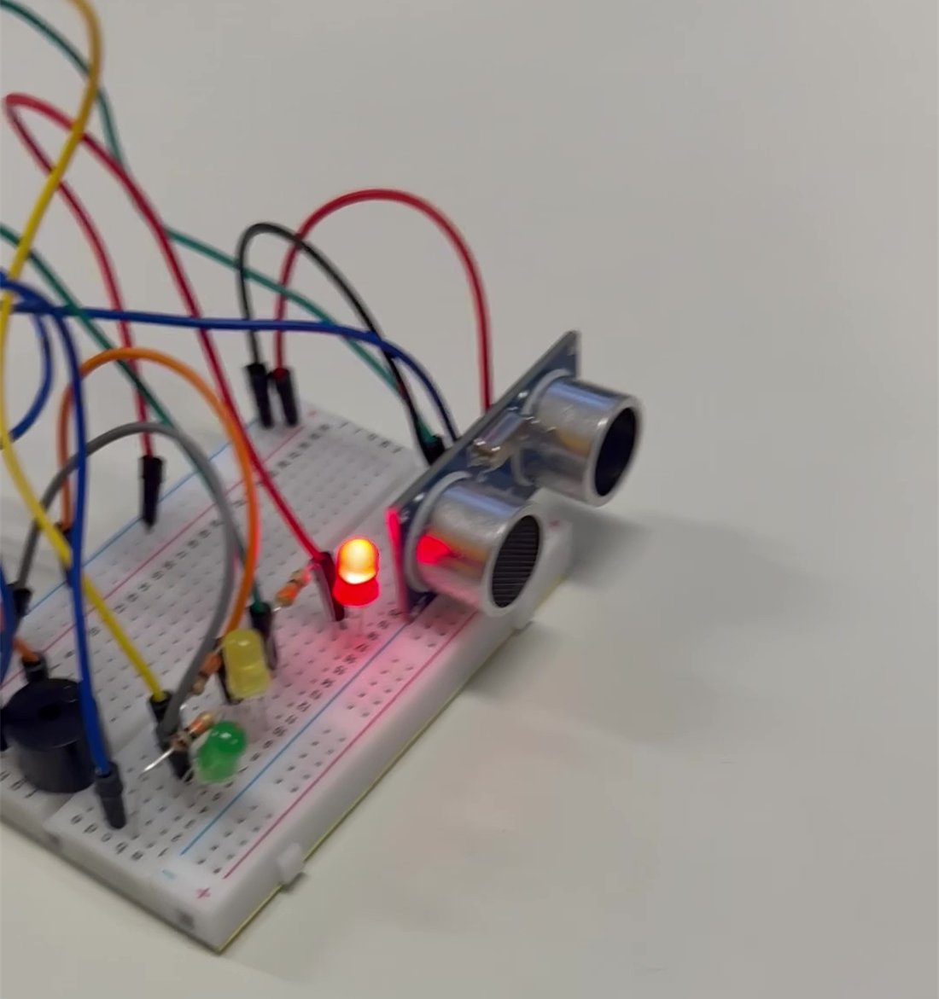

Mini Fábrica Inteligente
Esteira que detecta cores, com banco de dados e painel no celular.
Ver projeto →Técnico em Internet das Coisas (IoT)
Projetos práticos, programação e banco de dados desenvolvidos no curso de IoT.
Esteira que detecta cores, com banco de dados e painel no celular.
Ver projeto →
Arduino, sensor ultrassônico, LEDs e buzzer para avisar a distância.
Ver projeto →
Maquete com áreas iluminadas por LEDs, apresentada pelo grupo.
Ver projeto →
Algoritmos, Java, modelagem MER, SQL e redes.
Ver conteúdo →
HTML, CSS e JavaScript, usados para construir este portfólio.
Ver conteúdo →